Brakes
74 parts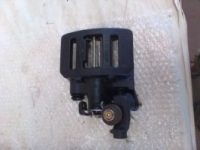
Out of stock008 2003 - 2010 Dodge Viper SRT10 Left Parking Brake Caliper - 05093309AA
Part # 05093309AA
$385.00
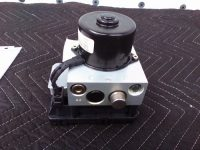
Out of stock01-02 VIPER ABS UNIT MODULE & MODULATOR ASSY - Used part - 05016566AA 05017905AA
Part # 05016566AA 05017905AA
$800.00
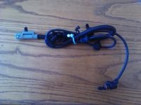
Out of stock03-10 DODGE VIPER FRONT ABS SENSOR 056044144AD
Part # 056044144AD
$67.00
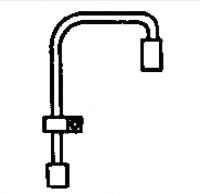
1992 - 1995 Dodge Viper RT/10 Left Front Brake Hose Assembly - 04642229
Part # 04642229
$20.00
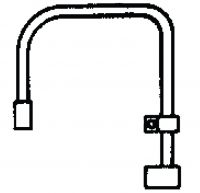
1992 - 1995 Dodge Viper RT/10 Right Front Brake Hose Assembly - 04642228
Part # 04642228
$20.00
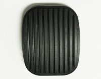
1992 - 1996 Dodge Viper Brake or Clutch Pedal Pad - 04723478
Part # 04723478
$60.00
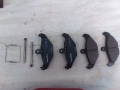
Out of stock1992 - 2000 Dodge Viper Rear Brake Pad Kit - 04720987
Part # 04720987
$125.00
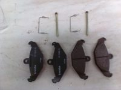
1992 - 2000 Dodge Viper Rear Brake Pad Kit - 04897219AB
Part # 04897219AB
$325.00
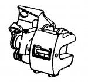
1992 - 2000 Dodge Viper Right Rear Brake Caliper - 04723606
$325.00
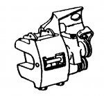
1992 - 2000 Viper Left Rear Brake Caliper - 4723607 Dodge
$325.00
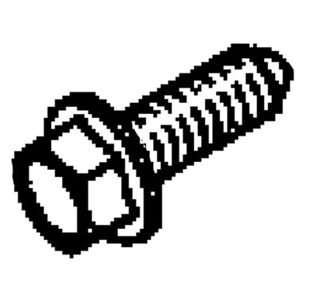
1992 - 2002 Dodge Viper Brake Hose to Caliper Bolt - 06503805
Part # 6503805
$5.00
1992 - 2002 Dodge Viper Brake Hose to Caliper Washer - 06502114
Part # 6502114
$6.00
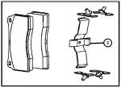
1992 - 2002 Dodge Viper Front Brake Pads - 04720986
Part # 04720986
$169.00
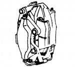
1992 - 2002 Dodge Viper Left Front Brake Caliper - 04723572
$795.00

1992 - 2002 Dodge Viper OEM Vented Front Brake Rotor - 04642122AC
Part # 4642122AC
$290.00

1992 - 2002 Dodge Viper OEM Vented Rear Brake Rotor - 04642353
$100.00

1992 - 2002 Dodge Viper Pedal Adjustment Knob - 04897163AA
Part # 04897163AA
$55.00
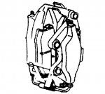
1992 - 2002 Dodge Viper Right Front Brake Caliper - 04723573
$795.00
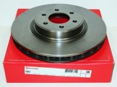
Out of stock1992 - 2002 Dodge Viper Vented Rear Brake Rotor by Brembo - 04642353
Part # 04642353
$100.00
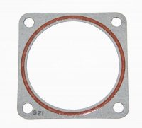
Out of stock1992 - 2010 Dodge Viper Rear Wheel Bearing Gasket - 4848171
Part # 4848171
$10.00

1992 - 2017 Dodge Viper Rear Hub & Bearing Assembly - 04848716
Part # 04848716
$985.00
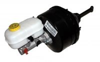
1992-2000 Dodge Viper RT/10 GTS Brake Master Cylinder 4642548
Part # 4642548
$250.00

1996 - 2000 Dodge Viper Front Hub & Bearing Assembly - 04763182 04763183
Part # 4763182 04763183
$500.00
 Out of stock
Out of stock1996 - 2002 Dodge Viper GTS / ACR Liftgate Sneaky Pete Brake Lamp - 04763042
Part # 4763042
$300.00
 Out of stock
Out of stock1996 - 2002 Dodge Viper Parking Brake Cable - 04763181
Part # 04763181
$25.00
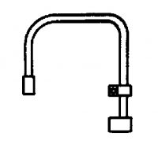
1996 - 2002 Dodge Viper Right Front Brake Line - 04763154AB
Part # 04763154AB
$29.00
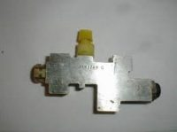
1997 - 2000 Dodge Viper RT/10 GTS Brake Proportioning Valve 4848532AB
Part # 4848532AB
$125.00

2001 - 2002 Dodge Viper Rear Brake Pad Kit - 05066478AA ABS
Part # 05066478AA
$175.00
2003 - 2004 Dodge Viper OEM Black Left Front Brake Caliper - 05093293AA
$485.00
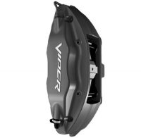
2003 - 2004 Dodge Viper OEM Black Left Rear Brake Caliper - 05093304AA
Part # 05093304AA
$386.00
 Out of stock
Out of stock2003 - 2004 Dodge Viper OEM Black Right Front Brake Caliper - 05093292AA
Part # 05093292AA
$485.00
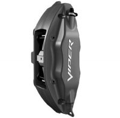
2003 - 2004 Dodge Viper OEM Black Right Rear Brake Caliper - 05093305AA
Part # 05093305AA
$386.00

2003 - 2006 Dodge Viper SRT10 Brake Clutch Pedal Assembly - 05290890AG
Part # 05290890AG
$650.00
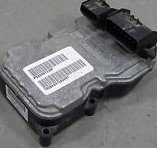
2003 - 2010 Dodge Viper ABS Module 5066605AA
Part # 5066605AA
$864.00

2003 - 2010 Dodge Viper Left Rear Knuckle - 05134995AA BARE
Part # 05134995AA
$900.00
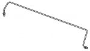
2003 - 2010 Dodge Viper Rear Brake Tube - 05290857AA
Part # 05290857AA
$15.00

2003 - 2010 Dodge Viper Right Rear Knuckle - 05134994AA
Part # 05134994AA
$2,995.00
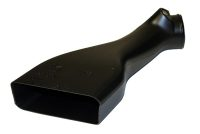
2003 - 2010 Dodge Viper SRT10 Brake Air Cooling Duct Left Side 05264983AA
Part # 5264983AA
$33.00
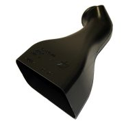
2003 - 2010 Dodge Viper SRT10 Brake Air Cooling Duct Right Side - 05264984AA
Part # 05264984AA
$33.00

2003 - 2010 Dodge Viper SRT10 Brake Master Cylinder & Booster Assembly - 05093049AA 5093050AA
Part # 05093049AA 5093050AA
$399.00
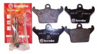
2003 - 2010 Dodge Viper SRT10 Complete Parking Brake Pad Kit - 05093307AA
Part # 05093307AA
$161.00
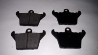
2003 - 2010 Dodge Viper SRT10 Complete Parking Brake Pad Kit -aftermarket 05093307AA
Part # 5093307AA 60364569aa
$89.00
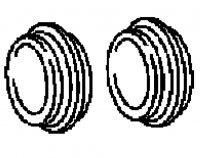
2003 - 2010 Dodge Viper SRT10 Front Disc Brake Boot Kit - 05093296AA
Part # 05093296AA
$22.00
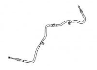
2003 - 2010 Dodge Viper SRT10 Left Parking Brake Cable - 05290285AE
Part # 05290285AE
$30.00
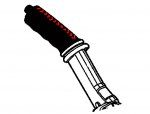
2003 - 2010 Dodge Viper SRT10 Parking Brake Handle w/ Red Stitching - 0ZG752R1AA
Part # 0ZG752R1AA
$285.00
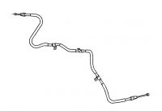
Out of stock2003 - 2010 Dodge Viper SRT10 Right Parking Brake Cable - 05290284AE
Part # 05290284AE
$55.00

2003 - 2010 Dodge Viper SRT10 Vented Rear Brake Rotor by Brembo
Part # 27231
$100.00

2003 - 2010 Dodge Viper Vented Front Brake Rotor by Brembo
Part # 27230
$75.00

2003 - 2013 Dodge Viper OEM Left Front Brake Caliper - 05136153AA
$550.00
 Out of stock
Out of stock2003 - 2013 Dodge Viper OEM Left Rear Brake Caliper - 05136155AA
Part # 05136155AA
$550.00

2003 - 2013 Dodge Viper OEM Right Rear Brake Caliper - 05136154AA
$583.00
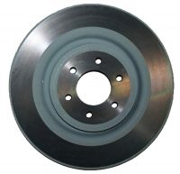
2003 - 2013 Dodge Viper SRT10 OEM Vented Front Brake Rotor - 05290394AA
Part # 5290394AA
$125.00
 Out of stock
Out of stock2003 - 2013 Dodge Viper SRT10 OEM Vented Rear Brake Rotor - 05290393AA
Part # 5290393AA
$125.00
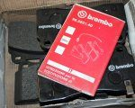
2003 - 2016 Dodge Viper SRT10 Factory Brake Pad Kit - 05093291AB
Part # 5093291AB
$275.00
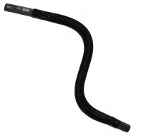
Out of stock2004 - 2006 Dodge Viper SRT10 Brake Booster Vacuum Hose - 05037138AC
Part # 05037138AC 05037138ad
$25.00

2008 - 2010 Dodge Viper SRT10 Brake Clutch Gas Pedal Assembly - 05290926AD
Part # 05290926AD
$2,000.00

2008 Jeep Grand Cherokee SRT8 Front Brake Pad Set - 68002193AA
$264.00
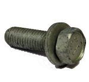
97-02 Dodge Viper Front Caliper to Knuckle Hex Head Bolt & Washer M12x1.75x40 - 06101964
$6.00
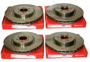
SRT10 Rotors, Set of Front - SALE
$150.00

1996 - 2010 Dodge Viper Front Wheel Bearing Gasket - 4848166
Part # 4848166
$24.00
1997 - 2002 Dodge Viper Front Brake Pad Kit - 04897218AB
Part # 04897218AB
$159.00
2001 2002 Dodge Viper Brake Master Cylinder Resivoir 05017424AA
$39.95
2003 - 2010 Dodge Viper SRT10 Right Parking Brake Caliper - 05093308AA
Part # 05093308AA
$475.00
Out of stock2003 - 2010 Dodge Viper SRT10 Vented Rear Brake Rotor Pair by Brembo 05290393AA
Part # 05290393AA 27231
$150.00
2003 - 2013 Dodge SRT Viper Brake Caliper Bleeder Screw With Cap - 05093297AA
$7.50
Out of stock2003-2017 Dodge Viper Brake Pad Pin Set 05093302AA
Part # 05093302AA
$18.00
2003-2017 Dodge Viper SRT10 Front or Rear Brake Pads
$195.00
2004 - 2010 Dodge Viper OEM Right Front Brake Caliper - 05136152AA
$634.00
2006 Fuel and Brake Line Bundle
Part # 05290102AE
$100.00
Out of stock2006-2010 Dodge Viper Coupe Brake Light High Mounted Lamp - 05030107AB
Part # 5030107AB
$299.00
2008 Jeep Grand Cherokee SRT8 Front Rotor Pair - 05290733AB
$330.00
2008 Jeep Grand Cherokee SRT8 Rear Brake Pad Set - 68034993AA
$259.00
2008 Jeep Grand Cherokee SRT8 Rear Rotor Pair - 05290731AB
$215.00
95-17 Viper Reservoir Cap, Master Cylinder 04683656ab
$31.00